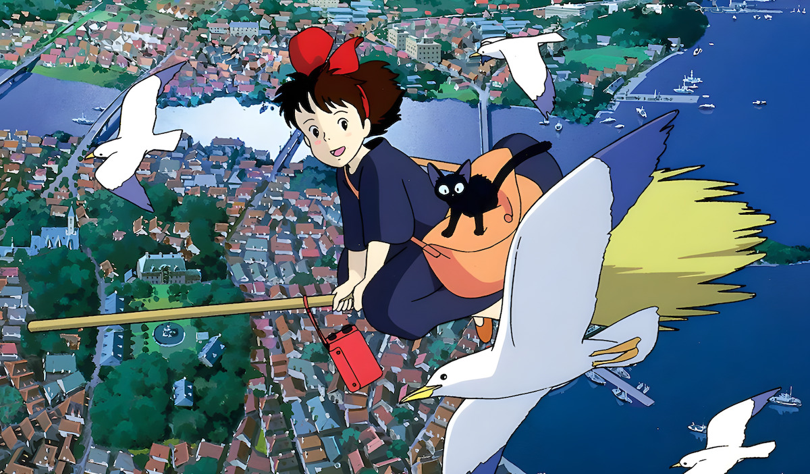
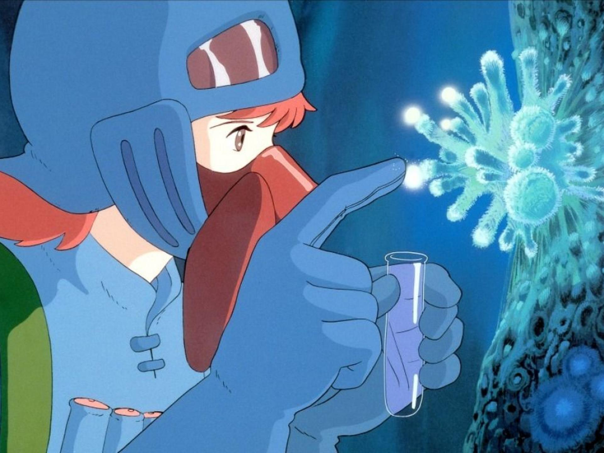

Le Studio Ghibli est un studio d'animation japonais fondé en 1985 par Hayao Miyazaki et Isao Takahata. Il est connu pour ses films d'animation de haute qualité, qui allient des récits fantastiques à des thèmes profonds et émouvants.
Le premier film du studio, "Nausicaä de la vallée du vent", a été réalisé en 1984, avant même la création officielle du studio. Ce film a posé les bases de l'esthétique et des thèmes qui deviendront emblématiques du studio.
Le Studio Ghibli a reçu de nombreuses récompenses, dont l'Oscar du meilleur film d'animation pour "Le voyage de Chihiro".
| Film | Année | Récompense |
|---|---|---|
| Le voyage de Chihiro | 2001 | Oscar du meilleur film d'animation |
| Le château ambulant | 2004 | Nommé pour l'Oscar du meilleur film d'animation |
| Princesse Mononoké | 1997 | Nommé pour le Golden Globe |
Les films du Studio Ghibli ont eu un impact significatif sur la culture populaire, tant au Japon qu'à l'international. Ils sont souvent étudiés pour leur profondeur narrative et leur esthétique visuelle. Il met en exergue un style qui restera gravé dans nos souvenirs d'enfance.
Pour en savoir plus sur le Studio Ghibli, vous pouvez visiter leur site officiel : Studio Ghibli
Le Studio Ghibli continue d'inspirer des générations de cinéastes et de spectateurs à travers le monde. Son style unique, alliant une narration poétique, des thématiques profondes et une animation d’une qualité exceptionnelle, a marqué l’histoire du cinéma d’animation.
Au fil des décennies, Ghibli a su toucher des cœurs bien au-delà du Japon, influençant de nombreux créateurs et suscitant l’admiration des amateurs d’animation du monde entier.